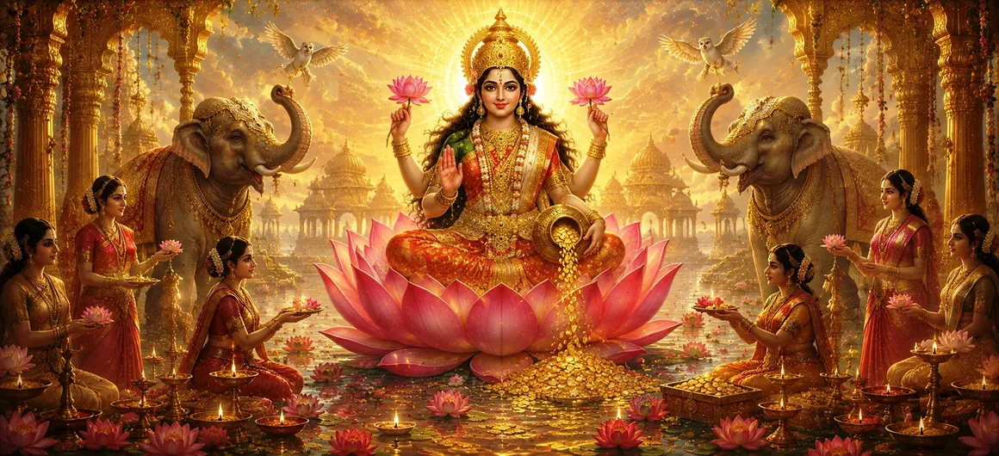

The Incarnation of Mahalakshmi
Following the powerful revelation of Goddess Mahakali's fierce form in Chapter 45, the forty-sixth chapter of Uma Samhita shifts to explore the benevolent, graceful, and sustaining manifestation of Goddess Mahalakshmi.
This chapter illuminates the divine descent of Mahalakshmi, detailing her role as the preserver of abundance, harmony, material well-being, and spiritual richness across creation.
Through sacred descriptions, the text demonstrates how her radiant energy nourishes the universe and sustains life with divine grace.
Chapter 46 Highlights
Radiant Descent
Describes the auspicious and luminous manifestation of Goddess Mahalakshmi.
Universal Sustenance
Details her role in preserving life, wealth, and material prosperity.
Grace and Beauty
Highlights her compassionate nature and the beauty of spiritual purity.
True Abundance
Explores both material wealth and inner spiritual richness bestowed by her grace.
Cosmic Balance
Examines how her sustaining energy balances the fierce force of dissolution.
Devotional Blessings
Reveals the rewards of steadfast devotion and pure reverence to the Goddess.
Core Topics in This Chapter
- 01 The Auspicious Advent of Goddess Mahalakshmi →
- 02 Description of Her Luminous Form and Attributes →
- 03 Her Role as the Sustainer of All Creation →
- 04 The True Meaning of Prosperity and Wealth →
- 05 Harmony Between Mahakali, Mahalakshmi, and Mahasaraswati →
- 06 Granting Blessings to Righteous Seekers →
- 07 Cultivating Gratitude and Generosity of Heart →
- 08 Achieving Inner Stability and Peace through Her Grace →
- 09 Nurturing Devotion as the Highest Treasure →
- 10 Transition to the Battles Against Demonic Forces →
The Auspicious Advent of Goddess Mahalakshmi
Chapter 46 begins by detailing how Goddess Mahalakshmi manifests to bring balance, nourishment, and material and spiritual stability to the universe after the fierce work of destruction.
Her descent heralds a period of flourishing life and well-ordered existence.
Description of Her Luminous Form and Attributes
The text portrays Mahalakshmi as glowing with the brilliance of molten gold, adorned with auspicious symbols of fortune, holding items that signify wealth, harvest, and divine protection.
Her expression radiates supreme kindness, peace, and maternal warmth.
Her Role as the Sustainer of All Creation
Mahalakshmi represents the vital sustaining force (Sthiti) that nurtures living beings, ensures the fertility of the earth, and maintains economic and social harmony.
Without her sustaining grace, creation cannot thrive or maintain its form.
The True Meaning of Prosperity and Wealth
The chapter emphasizes that true wealth encompasses not only material grains and riches, but also noble character, generosity, contentment, and devotion to the divine.
Material prosperity is sacred when coupled with righteousness and charity.
Harmony Between Mahakali, Mahalakshmi, and Mahasaraswati
The narrative places Mahalakshmi within the grand trinity of cosmic goddesses, showing how her sustaining power coordinates seamlessly with Mahakali's transformation and Mahasaraswati's wisdom.
Together, they govern the grand cycles of the universe.
Granting Blessings to Righteous Seekers
Devotees who approach Mahalakshmi with purity of intention and righteous labor are blessed with stability, abundance, and freedom from scarcity and despair.
Her benevolence removes obstacles related to sustenance and security.
Cultivating Gratitude and Generosity of Heart
The text advises that those blessed by Mahalakshmi must cultivate gratitude, share their abundance with the needy, and avoid greed or arrogance.
True abundance multiplies when shared with compassion.
Achieving Inner Stability and Peace through Her Grace
Beyond physical wealth, Mahalakshmi grants emotional and mental stability, anchoring the seeker's mind in steady peace amidst the fluctuations of worldly life.
Her grace pacifies turbulent desires and fosters contentment.
Nurturing Devotion as Highest Treasure
The chapter concludes its main philosophical discourse by reminding seekers that unwavering devotion to the Supreme Goddess is the greatest treasure one can acquire.
All other forms of wealth are transient compared to spiritual devotion.
Transition to the Battles Against Demonic Forces
Having revealed the sustaining grace and abundance of Mahalakshmi in Chapter 46, the narrative prepares for intense action in Chapter 47.
The text sets the stage for the fierce battles where the Goddess confronts and slays demonic entities including Dhumralochana, Chanda, Munda, and Raktabija.
Both preservation and active protection unite in the divine plan.
Key Teachings of Chapter 46
Sustaining Grace
Mahalakshmi represents the vital force that nurtures and preserves creation.
True Wealth
Prosperity includes moral character, generosity, and spiritual contentment.
Cosmic Balance
Her grace balances destruction by ensuring continuous growth and life.
Radiant Peace
Her worship brings emotional stability and peace amidst worldly turbulence.
Generous Sharing
Abundance received from the divine must be shared with compassion.
Supreme Devotion
Unwavering devotion to the Goddess remains life's ultimate treasure.
Spiritual Reflection
Chapter 46 of Uma Samhita turns our gaze toward the gentle, nourishing, and sustaining power of Goddess Mahalakshmi. While destruction clears away the old, Mahalakshmi steps forward to build, nurture, and maintain life with golden grace. This chapter reminds us that prosperity is not merely a matter of material accumulation, but a sacred trust involving charity, gratitude, and inner contentment. By inviting Mahalakshmi's energy into our lives through righteous living and devotion, we learn to sustain our souls and share our blessings with the world around us.
Living the Message of Chapter 46
Practice gratitude daily for the food, shelter, and resources you have, viewing them as gifts of divine sustenance.
Share your material and emotional abundance with those in need, practicing charity with a pure and open heart.
Maintain inner peace and mental stability even when facing financial or worldly uncertainties.
Key Spiritual Concepts
The benevolent cosmic goddess representing sustenance, wealth, grace, and preservation.
The cosmic phase of preservation, maintenance, and sustenance of creation.
Material wealth and prosperity, which become sacred when coupled with righteousness.
Inner contentment and emotional peace derived from spiritual stability.
Charity and selfless sharing of one's abundance with the wider community.
The threefold cosmic feminine trinity comprising Mahakali, Mahalakshmi, and Mahasaraswati.
Chapter Summary
Uma Samhita Chapter 46 explores the divine incarnation, radiant form, and sustaining grace of Goddess Mahalakshmi. It highlights her crucial role in preserving life, ensuring material and spiritual abundance, and maintaining cosmic balance alongside Mahakali and Mahasaraswati. By teaching the true meaning of prosperity, gratitude, and inner peace, the chapter prepares the narrative for the fierce battles against demonic forces in Chapter 47.
Frequently Asked Questions
① What is the primary focus of Uma Samhita Chapter 46?
The primary focus is the divine incarnation, graceful form, and cosmic sustaining role of Goddess Mahalakshmi in maintaining prosperity, wealth, and universal balance.
② How does Chapter 46 follow Chapter 45?
After exploring the fierce cosmic energy and destruction of ignorance by Goddess Mahakali in Chapter 45, Chapter 46 transitions into the benevolent and sustaining energy of Goddess Mahalakshmi.
③ What does the form of Mahalakshmi represent?
Her radiant form represents spiritual wealth, material abundance, harmony, and the sustaining grace that nurtures all creation.
④ How does Chapter 46 connect to Chapter 47?
Chapter 46 flows directly into Chapter 47, which details the fierce battles and slaying of demons such as Dhumralochana, Chanda, Munda, and Raktabija.
⑤ What is the spiritual significance of worshiping Mahalakshmi?
Worshiping Mahalakshmi brings inner richness, purity of heart, balanced living, and the grace required to sustain both material and spiritual well-being.
⑥ How does Mahalakshmi relate to cosmic order in the Shiva Purana?
She acts as the vital sustaining power that preserves life, maintains order, and blesses devotees with the fruits of righteousness.
“Radiant as molten gold, Goddess Mahalakshmi sustains all creation with abundance, peace, and grace, blessing righteous seekers with true prosperity.”
Continue Through Uma Samhita
Chapter 46 explores the sustaining incarnation of Goddess Mahalakshmi. With this chapter concluded, proceed into Chapter 47 to witness the slaying of Dhumralochana, Chanda, Munda, and Raktabija.